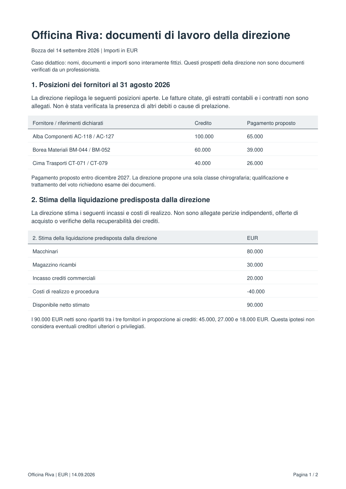
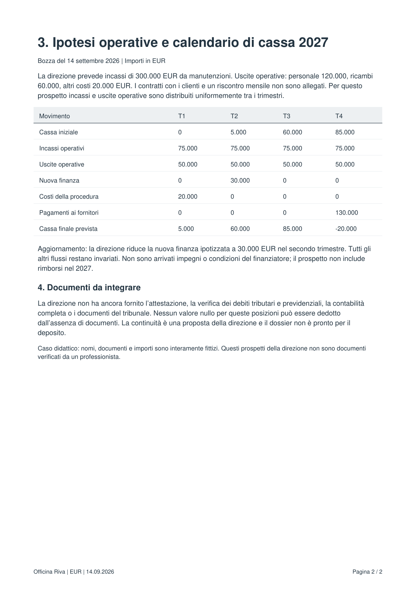

File della lezione
management-practice-it.pdf
files/practice/management-practice-it.pdf
Qui puoi leggere il contenuto del file fornito per la lezione. La funzione usa il file originale; questa pagina serve solo per leggerlo.

